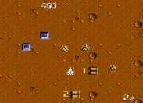

|

Review

Game Type: Overhead view shooter
12 intense stages of top-notch top-down shooter with lots of powerups.
Gameplay: 95/100
I like Space Megaforce and Raiden Project well enough, but this is the
shooter I play when I'm looking for a rush. The ground speeds by at an incredible pace. Every screen is laden with
enemies and bullets coming at you from all directions. And you can open the can-o-whupass on all those
enemies with eight of the coolest weapons ever seen in a shooter. (Powerups
abound as well.)
Graphics: 80/100
The graphics aren't especially complex; most enemies are re-used at
random throughout the game, and the bosses are all just different arrangements of
turrets. But they get the job done quite well. Bullets and enemies are highly
visible against the backgrounds, which aids in dodging them (you'll need all
the help you can get). The explosions are well animated, and the weapons look
mighty impressive when fully powered up.
Sound: 80/100
The sound effects are just average, but the tunes are extremely catchy.
(I've been caught whistling them before.) Too bad there are so few of them;
they repeat every few rounds.
Overall: 95/100
Not sure if this is my favorite NES game or not but it comes darn close.
It's definitely the best NES shooter and my third (second?) favorite shooter
of all time. Highly addictive. Pick it up at a pawn shop somewhere. For 5
to 10 dollars you'll have a shooter better than many of those you paid 60
bucks for.
Codes
- Sound Test
- At any time hold A and B and press Reset.
- Alternate Ship
- At the main menu hold A and B and press Start.
- Stage Select
- Press Reset 13 times. At the main menu press L or R to select a stage.
|